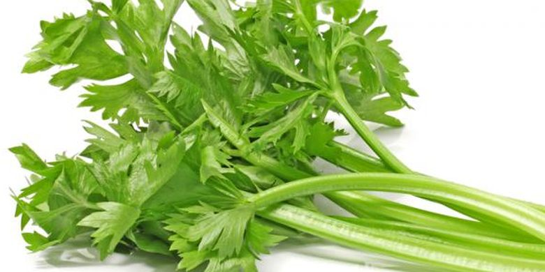

Seledri (Apium graveolens L.) adalah sayuran daun dan tumbuhan obat yang biasa digunakan sebagai bumbu masakan. Beberapa negara termasuk Jepang, Cina dan Korea mempergunakan bagian tangkai daun sebagai bahan makanan. Di Indonesia tumbuhan ini diperkenalkan oleh penjajah Belanda dan digunakan daunnya untuk menyedapkan sup atau sebagai lalap. Penggunaan seledri paling lengkap adalah di Eropa: daun, tangkai daun, buah, dan umbinya semua dimanfaatkan.